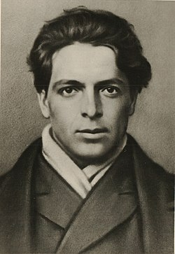
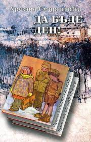
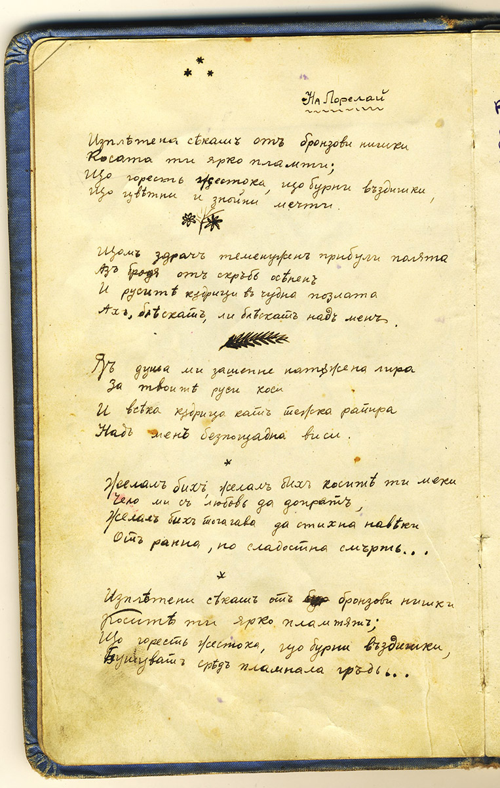
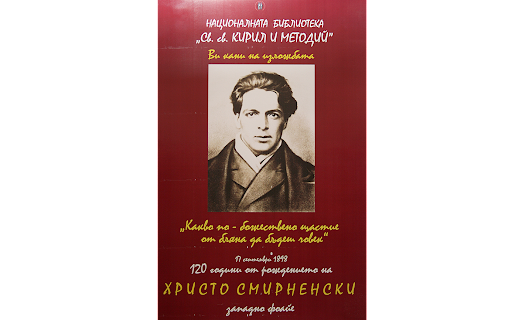

Христо Смирненски

Христо Димитров Измирлиев с псевдоним Христо Смирненски е български поет и журналист. Основна тема в творчеството му е социалната несправедливост.
Биография
Христо Смирненски е роден на 17 септември 1898 година в град Кукуш, тогава в Османската империя, днес Килкис, Гърция, в семейството на Димитър Христов Измирлиев. След опожаряването на родния му град, той се премества със семейството си в София. Работи известно време като вестникар и репортер, а също и като писар. Христо Смирненски ни завещава над 800 лирически произведения и над 100 прозаически.
Детство и юношество
Семейството на Христо Смирненски участва дейно в църковните борби на македонските българи. Баща му Димитър Измирлиев е деец на ВМОРО,[4] а дядо му Анастас Кръстев е виден български духовник, участник в църковно-националните борби на българите, български екзархийски наместник в Кукуш.[5] Негов пръв братовчед е българският комунист Петър Хаджиделев.[6] Туше Делииванов, близък техен роднина, пише:
Измирлиевци са страдали в борбата за българското духовно възраждане. Бащата на това момче е затварян, съден и измъчван в тези борби от турските власти по подстрекателства на гъркомани и на гръцките владици. Измирлиевци са уважаван род от всички кукушани – българи.
През октомври 1912 г. започва Балканската война и на двадесет и петия ден от същия месец българските войски освобождават Кукуш. Смирненски е едва на 14 години. Радостта на населението обаче е твърде кратка. След победата между балканските съюзници изникват разногласия и избухва Междусъюзническата война. Пред опасността от настъпващите гръцки войски жителите напускат Кукуш; градът е опожарен. Семейството на Димитър Измирлиев, заедно с хилядите бежанци, се отправя да търси спасение и препитание в София. Въпреки състоянието на мизерия, в което се намират, Димитър Измирлиев и жена му държат децата им да учат. Христо се записва в Техническото училище, но заедно с по-малкия си брат Андон Измирлиев помага в издръжката на семейството – продават вестници.
Зрял период
След навлизането си в гражданския живот Смирненски става член на редакционната колегия на „Българан“, но същевременно изкарва прехраната си първоначално като писар II разред в Управлението по транспорта, по-късно като кариерист, а след това е чиновник в дирекцията на стопанските грижи, репортер, касиер, редактор, коректор.
Периодът на 1919 и 1920 година е бурен в живота на София, време на социални сблъсъци. През ноември 1919 г. по решение на Комунистическата партия започва да излиза седмичното хумористично художествено-литературно списание „Червен смях“. Участието на Смирненски в списването му има решаващо значение за него – хуморът му става все по-социално насочен. Той участва в демонстрации и митинги, на които се поставят искания за амнистия на осъдените войници, подобряване на материалното положение на трудещите се и др. Постепенно социалната принадлежност на Смирненски става решаващ фактор в идеологическите му възгледи и той се пропива със съзнанието, че е боец на пролетариата. През пролетта на 1920 г. става член на Комунистическия младежки съюз, а през 1921 г. – на Комунистическата партия.
В края на февруари 1922 г. партийното издателство „Общо работническо кооперативно дружество „Освобождение“ отпечатва втората и последна издадена приживе стихосбирка на Смирненски – „Да бъде ден!“. Отпечатана в 1500 бройки, сбирката се разпродава бързо и няколко месеца по-късно кооперативното дружество „Освобождение“ пуска второ издание. „Да бъде ден!“ въвежда поета като ярко талантлива и добре отграничена индивидуалност – творец, чието творчество е силно социално ангажирано, което носи новия ценностен модел, новите обществени и естетически каузи в разноликата българска литература на второто десетилетие на XX век. С „Да бъде ден!“ Смирненски излиза извън границите на политическата и идеологическа ангажираност и заявява безкористното пламенно човеколюбие, бляна за щастие на човечеството, превърнали се в негова творческа философия. Тук именно Смирненски най-ярко се сближава с нравствения заряд на Ботевите творби и средството, което Ботев намира за противопоставяне срещу човеконенавистничеството – борбата, революцията. За лявата литературна критика Смирненски митопоетизира събуденото класово самочувствие на пролетарското мнозинство и бунта му срещу обществените несправедливости. С неповторим лиричен почерк Смирненски възпява копнежа по щастие и безсмъртната любов към хората, обобщени философски в „Херолди на новия ден!“ – „Какво по-божествено щастие от бляна да бъдеш човек“ (по-късно Смирненски изключва това стихотворение от стихосбирката).
Последни години
През пролетта на 1921 г. Смирненски се разболява от паратиф и през лятото заминава в рилското село Радуил, за да се лекува. Завърнал се в София, той продължава да пише и публикува лирически, хумористично-сатирични стихове и фейлетони. Във връзка с една стачка на тютюневите работници той пише стихотворението „Жълтата гостенка“ (15 юли 1922). През 1922 г. отново се чувства зле и през лятото отново заминава за Радуил, при свои приятели. Там прекарва един особено плодотворен месец. Тук той написва стихотворенията „Юноша“ и „Каменарче“, фейлетоните „В трена“ и „В Самоковския общински съвет“, импресиите „Босоногите деца“ и „Смело, товаришчи!“, очерците „Пожар в Рила“ и „Куртова поляна“. В началото на септември е в Чамкория, където работи като измервач в горското стопанство. В края на годината се завръща в София и до първите месеци на 1923 г. е в период на особена творческа активност. Пише „Роза Люксембург“, "Зимни вечери“, „Съветска Русия“ и сатирата „На гости у дявола“.
| Разкази |
Стихосбирки |
Фейлетони |
| Из дневника на един английски поручик |
Да бъде ден |
Благотворителност |
| Гюро Михайлов пътува |
Стихове от 1917 г. |
Рапортьор |
| Очи |
Стихове от 1918 г. |
Писма до оня свят |
| Левски |
Стихове от 1919 г. |
Писмо до провинцията |
| Лятна нощ |
Стихове от 1921 г. |
Политическа зима |


To be continued...